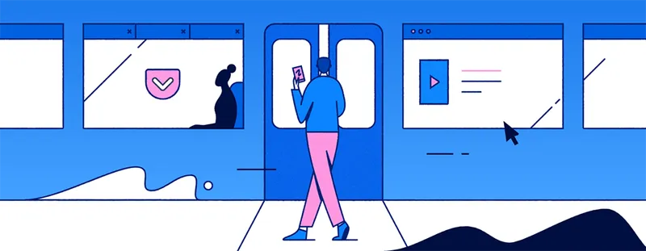

Abstract:
Welcome to my Website!
This site takes a look at how the web browser has changed over time. A browser is the software that requests, translates, and displays online content, turning it into the pages we read and interact with every day. You'll find out how browsers actually work behind the scenes, including the rendering engines, JavaScript engines, and security features that power them. You'll also read about the two "browser wars" that shaped the browsers we use today, first between Internet Explorer and Netscape Navigator, and later between Internet Explorer, Firefox, and Chrome. These pages also break down the important concepts and terms. What started as Tim Berners-Lee's very first browser in 1990 has grown into the tools that connect billions of people to the web today.

Key Terms:
| Browser Wars | the periods of commercial competition (1995–2001 & 2004–2017) between browser makers that reshaped which browsers dominated and how web standards developed |
|---|---|
| Content Decryption Module (CDM) | a component required to play DRM-protected content from subscription-based services |
| Digital Rights Management (DRM) | technology that controls access to copyrighted content, requiring a browser to have the right components to play protected media from services like Netflix and Spotify |
| Extensions | small software programs users can install to expand what a browser can do, such as blocking ads, managing passwords, or adding new tools |
| HTTP/HTTPS | the communication protocols browsers use to request and receive data, with HTTPS adding encryption |
| JavaScript engine | reads and executes JavaScript so pages can update in response to user actions |
| Rendering Engine | the component that turns website code into the visible page (ex: Blink, WebKit, Gecko) |
| User interface (UI) | the parts users interact with directly (ex: the address bar, navigation buttons, and tabs) |
| Uniform Resource Locator (URL) | the web address a user types into a browser to reach a specific page, which starts the process of requesting that page from a web server |
| The Web | the collection of sites and content, while the internet is the underlying network that carries it |
| Web client (browser) | software that requests, translates, and renders web data into a form users can read and interact with |
| Web server | the program that responds to a browser's requests by delivering the files that make up a web page |
| Web standards | shared specifications that keep websites working consistently across different browsers |
| World Wide Web (WWW) | the system of interlinked web pages and documents that people access through browsers over the internet |